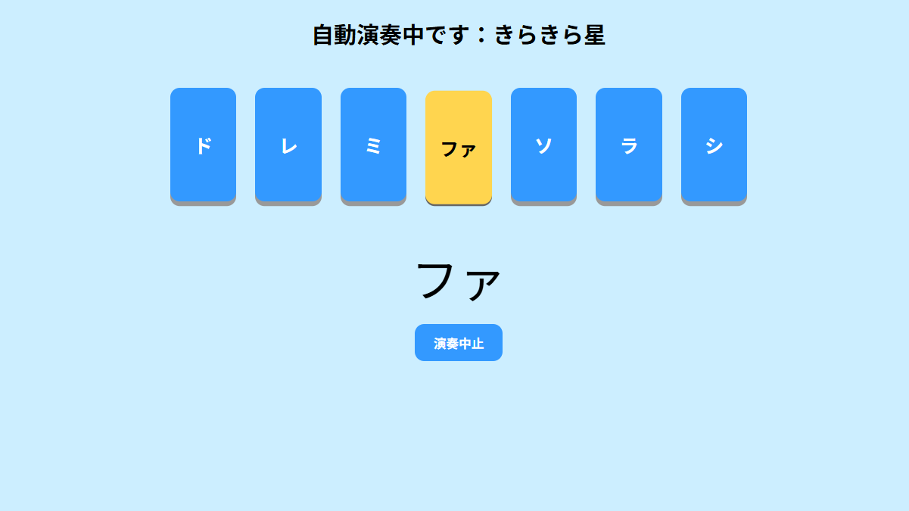
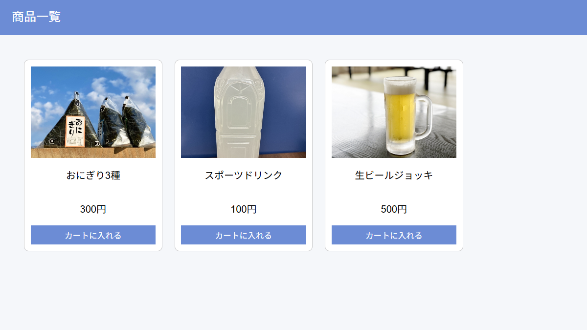
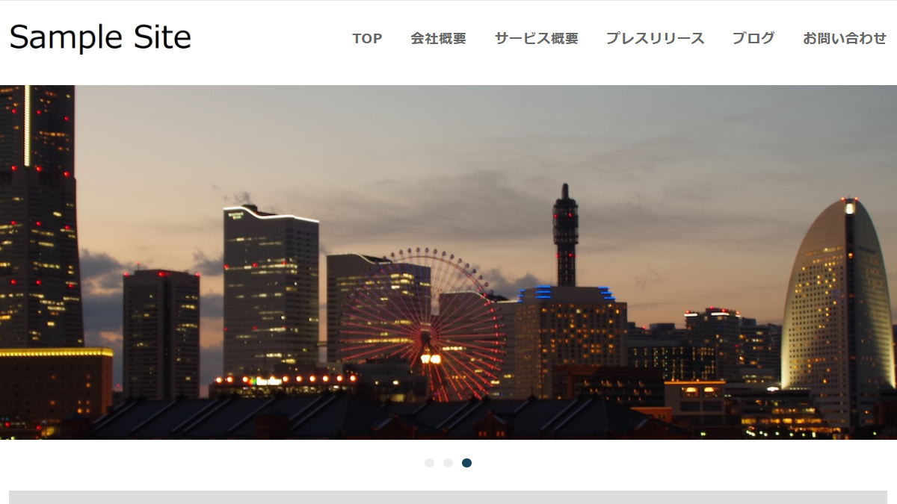

実装サンプル
Sample
画像ギャラリー
開発環境
日々の学習と開発を象徴するイメージです。 コードを書く時間を積み重ねることを大切にしています。

作業環境
集中して課題に取り組む環境を表現しています。 問題解決のために冷静に向き合う姿勢を大切にしています。

ITの世界
ITの可能性と未来への挑戦をイメージしています。 新しい技術にも積極的に取り組んでいます。
論理的思考
回路のように整理された設計を目指しています。 ユーザーにとって使いやすいシステムを作れるように努めています。
作品集
JavaScript: 簡易ピアノ課題

JavaScriptを使用して制作した簡易ピアノアプリです。 DOM操作やイベント処理、タイマー制御を活用し、鍵盤演奏や自動演奏機能を実装しました。 また、定数化・関数分割・状態管理を意識し、フィードバックを受けながら可読性や保守性の向上にも取り組みました。
PHP/MySQL：ECサイト

PHP/MySQLを使用して制作したECサイトです。ログイン機能、商品一覧表示、カート機能、購入処理などを実装しました。 PHPによるサーバーサイド処理やMySQLを用いたデータベース操作、セッション管理などを学習しながら制作を進めました。 また、ユーザー視点を意識し、画面遷移や操作の分かりやすさにも配慮しています。 現在はフィードバックを受けながら改善を進めており、可読性・保守性も意識して学習を継続しています。
WordPress

静的HTMLサイトをWordPressテーマ化した課題です。 投稿一覧表示、テンプレートタグ、ループ処理、お問い合わせフォームなどを実装しました。 フィードバックを受けながら細かな修正を重ね、可読性や保守性も意識して改善しました。